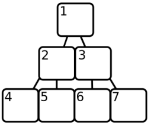

Appendix B: Binary Heaps¶
In Searching, the binary heap was introduced as a method to store a collection of objects in such a way that the smallest element can be quickly found. As promised, this appendix will explain the details behind this data structure.
Consider again the problem we needed to solve. The A* algorithm created large amounts of small objects, and had to keep these in an ‘open list’. It was also constantly removing the smallest element from this list. The simplest approach would be to just keep all the objects in an array, and search for the smallest one when we need it. But, unless we have a lot of time, this will not do. Finding the smallest element in an unsorted array requires going over the whole array, and checking each element.
The next solution would be, of course, to sort our array. JavaScript arrays have a wonderful sort method, which can be used to do the heavy work. Unfortunately, re-sorting a whole array every time an element is removed is more work than searching for a minimum value in an unsorted array. Some tricks can be used, such as, instead of re-sorting the whole array, just making sure new values are inserted in the right place so that the array, which was sorted before, stays sorted. This is coming closer to the approach a binary heap uses already, but inserting a value in the middle of an array requires moving all the elements after it one place up, which is still just too slow.
Another approach is to not use an array at all, but to store the values in a set of interconnected objects. A simple form of this is to have every object hold one value and two (or less) links to other objects. There is one root object, holding the smallest value, which is used to access all the other objects. Links always point to objects holding greater values, so the whole structure looks something like this:

Such structures are usually called trees, because of the way they branch. Now, when you need the smallest element, you just take off the top element and rearrange the tree so that one of the top element’s children ― the one with the lowest value ― becomes the new top. When inserting new elements, you ‘descend’ the tree until you find an element less than the new element, and insert it there. This takes a lot less searching than a sorted array does, but it has the disadvantage of creating a lot of objects, which also slows things down.
A binary heap, then, does make use of a sorted array, but it is only partially sorted, much like the tree above. Instead of objects, the positions in the array are used to form a tree, as this picture tries to show:

Array element 1 is the root of the tree, array element 2 and 3 are its children, and in general array element X has children X * 2 and X * 2 + 1. You can see why this structure is called a ‘heap’. Note that this array starts at 1, while JavaScript arrays start at 0. The heap will always keep the smallest element in position 1, and make sure that for every element in the array at position X, the element at X / 2 (round down) is smaller.
Finding the smallest element is now a matter of taking the element at position 1. But when this element is removed, the heap must make sure that there are no holes left in the array. To do this, it takes the last element in the array and moves it to the start, and then compares it to its child elements at position 2 and 3. It is likely to be greater, so it is exchanged with one of them, and the process of comparing it with its children is repeated for the new position, and so on, until it comes to a position where its children are greater, or a position where it has no children.
[2, 3, 5, 4, 8, 7, 6]
Take out 2, move 6 to the front.
[6, 3, 5, 4, 8, 7]
6 is greater than its first child 3, so swap them.
[3, 6, 5, 4, 8, 7]
Now 6 has children 4 and 8 (position 4 and 5). It is greater than
4, so we swap again.
[3, 4, 5, 6, 8, 7]
6 is in position 4, and has no more children. The heap is in order
again.
Similarly, when an element has to be added to the heap, it is put at the end of the array and allowed to ‘bubble’ up by repeatedly exchanging it with its parent, until we find a parent that is less than the new node.
[3, 4, 5, 6, 8, 7]
Element 2 gets added again, it starts at the back.
[3, 4, 5, 6, 8, 7, 2]
2 is in position 7, its parent is at 3, which is a 5. 5 is greater
than 2, so we swap.
[3, 4, 2, 6, 8, 7, 5]
The parent of position 3 is position 1. Again, we swap.
[2, 4, 3, 6, 8, 7, 5]
The element can not go further than position 1, so we are done.
Note how adding or inserting an element does not require it to be compared with every element in the array. In fact, because the jumps between parents and children get bigger as the array gets bigger, this advantage is especially large when we have a lot of elements.
Note
The amount of comparisons and swaps that are needed ― in the worst case ― can be approached by taking the logarithm (base 2) of the amount of elements in the heap.
Here is the full code of a binary heap implementation. Two things to note are that, instead of directly comparing the elements put into the heap, a function (scoreFunction) is first applied to them, so that it becomes possible to store objects that can not be directly compared.
Also, because JavaScript arrays start at 0, and the parent/child calculations use a system that starts at 1, there are a few strange calculations to compensate.
function BinaryHeap(scoreFunction){
this.content = [];
this.scoreFunction = scoreFunction;
}
BinaryHeap.prototype = {
push: function(element) {
// Add the new element to the end of the array.
this.content.push(element);
// Allow it to bubble up.
this.bubbleUp(this.content.length - 1);
},
pop: function() {
// Store the first element so we can return it later.
var result = this.content[0];
// Get the element at the end of the array.
var end = this.content.pop();
// If there are any elements left, put the end element at the
// start, and let it sink down.
if (this.content.length > 0) {
this.content[0] = end;
this.sinkDown(0);
}
return result;
},
remove: function(node) {
var len = this.content.length;
// To remove a value, we must search through the array to find
// it.
for (var i = 0; i < len; i++) {
if (this.content[i] == node) {
// When it is found, the process seen in 'pop' is repeated
// to fill up the hole.
var end = this.content.pop();
if (i != len - 1) {
this.content[i] = end;
if (this.scoreFunction(end) < this.scoreFunction(node))
this.bubbleUp(i);
else
this.sinkDown(i);
}
return;
}
}
throw new Error("Node not found.");
},
size: function() {
return this.content.length;
},
bubbleUp: function(n) {
// Fetch the element that has to be moved.
var element = this.content[n];
// When at 0, an element can not go up any further.
while (n > 0) {
// Compute the parent element's index, and fetch it.
var parentN = Math.floor((n + 1) / 2) - 1,
parent = this.content[parentN];
// Swap the elements if the parent is greater.
if (this.scoreFunction(element) < this.scoreFunction(parent)) {
this.content[parentN] = element;
this.content[n] = parent;
// Update 'n' to continue at the new position.
n = parentN;
}
// Found a parent that is less, no need to move it further.
else {
break;
}
}
},
sinkDown: function(n) {
// Look up the target element and its score.
var length = this.content.length,
element = this.content[n],
elemScore = this.scoreFunction(element);
while(true) {
// Compute the indices of the child elements.
var child2N = (n + 1) * 2, child1N = child2N - 1;
// This is used to store the new position of the element,
// if any.
var swap = null;
// If the first child exists (is inside the array)...
if (child1N < length) {
// Look it up and compute its score.
var child1 = this.content[child1N],
child1Score = this.scoreFunction(child1);
// If the score is less than our element's, we need to swap.
if (child1Score < elemScore)
swap = child1N;
}
// Do the same checks for the other child.
if (child2N < length) {
var child2 = this.content[child2N],
child2Score = this.scoreFunction(child2);
if (child2Score < (swap == null ? elemScore : child1Score))
swap = child2N;
}
// If the element needs to be moved, swap it, and continue.
if (swap != null) {
this.content[n] = this.content[swap];
this.content[swap] = element;
n = swap;
}
// Otherwise, we are done.
else {
break;
}
}
}
};
And a simple test...
var heap = new BinaryHeap(function(x){return x;});
forEach([10, 3, 4, 8, 2, 9, 7, 1, 2, 6, 5],
method(heap, "push"));
heap.remove(2);
while (heap.size() > 0)
alert(heap.pop());